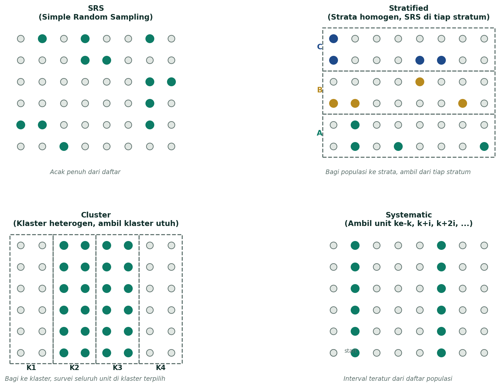

Daftar Isi
Konsep Dasar Statistika
Pasti Keluar B/SStatistika adalah cabang ilmu matematika terapan yang berfokus pada cara mengumpulkan, mengukur, mengklasifikasi, menghitung, menjelaskan, menganalisis, dan menafsirkan data secara sistematis. Tujuannya: mengubah data mentah menjadi informasi yang bisa dipakai untuk pengambilan keputusan. Statistika bukan sekadar "ngitung angka" — ia meliputi seluruh siklus: produksi data, peringkasan, eksplorasi, analisis, dan interpretasi.
1.1 Statistika vs Statistik (Bedakan Tanda "-a")
| Istilah | Definisi & Contoh |
|---|---|
| Statistika | Ilmu/cabang disiplin — kumpulan teori dan metode tentang cara mengolah data. Contoh: "Statistika deskriptif dipakai untuk merangkum data sensus." |
| Statistik | Nilai/bilangan yang dihitung dari sampel. Contoh: rata-rata sampel (x̄), simpangan baku sampel (s). Disebut juga statistic. |
| Parameter | Nilai/bilangan yang menggambarkan populasi. Contoh: rata-rata populasi (μ), varians populasi (σ²). Sering tidak diketahui pasti. |
1.2 Populasi vs Sampel
Populasi adalah keseluruhan objek/subjek yang menjadi pusat perhatian penelitian (bisa manusia, hewan, tumbuhan, gejala, nilai, dll). Sampel adalah bagian dari populasi yang dipilih dengan aturan tertentu sehingga dapat mewakili karakteristik populasi.
- Populasi = himpunan seluruh objek yang ingin dipelajari. Contoh: "Seluruh mahasiswa IPB angkatan 2024."
- Sampel = subset terpilih dari populasi. Contoh: "200 mahasiswa IPB angkatan 2024 yang dipilih acak."
- Sampling frame = daftar unit populasi yang bisa dijadikan basis penarikan sampel (mis. daftar NIM).
- Sampel representatif = sampel yang karakteristiknya mencerminkan populasi.
1.3 Jenis Data
| Kategori | Sub-jenis | Skala | Contoh |
|---|---|---|---|
| Kualitatif (berupa kategori/label) | Nominal | Hanya untuk label, tidak ada urutan | Agama, jenis kelamin, warna mata, jurusan |
| Ordinal | Ada urutan/rangking, tapi jarak antar nilai tidak setara | Tingkat kepuasan (kecewa → puas → sangat puas), peringkat kelas, tingkat pendidikan | |
| Kuantitatif (berupa angka terukur) | Diskrit | Hasil menghitung, bilangan bulat | Jumlah anak, jumlah mahasiswa, banyaknya mobil |
| Kontinu | Hasil mengukur, bisa pecahan | Tinggi badan, berat, suhu, waktu |
1.4 Statistika Deskriptif vs Inferensial
- Statistika deskriptif — merangkum & menyajikan data yang sudah dikumpulkan (tabel, grafik, mean, median, dst). Tidak menarik kesimpulan tentang populasi yang lebih besar.
- Statistika inferensial — menarik kesimpulan tentang populasi berdasarkan sampel (estimasi parameter, uji hipotesis, regresi). Wajib ada unsur peluang.
1.5 Variabel dan Skala Pengukuran
Variabel = karakteristik/atribut objek yang nilainya berbeda-beda antar objek. Variate = nilai konkret dari variabel pada satu objek. Data = kumpulan nilai yang diperoleh dari pengukuran/penghitungan suatu variabel.
Empat skala pengukuran Stevens: Nominal (hanya label), Ordinal (ada urutan), Interval (ada urutan + jarak setara, tapi nol tidak mutlak), Rasio (ada urutan + jarak setara + nol mutlak = tidak ada nilai).
- Contoh interval: suhu Celsius (0°C tidak berarti "tidak ada panas").
- Contoh rasio: berat badan (0 kg = tidak ada berat sama sekali; 40 kg = 2× 20 kg).
Penyajian Data
Sering di Bagian CSetelah data dikumpulkan, kita perlu menyajikannya agar pola dan informasi penting mudah dilihat. Penyajian ada dua bentuk: tabular (tabel) dan grafis (diagram). Pilihan bentuk bergantung pada jenis data — kategorik atau numerik.
2.1 Tabel Distribusi Frekuensi (TDF)
TDF dipakai untuk merangkas data numerik kontinu atau semi-kategorik ke dalam beberapa kelompok (kelas) sehingga pola sebarannya tampak. Berikut komponen wajib di hafal:
| Komponen | Definisi | Rumus / Aturan |
|---|---|---|
| Kelas (Class) | Interval yang membagi rentang data | Banyaknya kelas kira-kira k = 1 + 3,322 log10(n) (aturan Sturges) |
| Panjang Kelas (Class Width) | Lebar tiap kelas (boleh sama, boleh beda) | i = R / k = (Xmax − Xmin) / k, dibulatkan ke atas ke angka yang "enak" |
| Batas Kelas (Class Limit) | Batas bawah & batas atas tiap kelas (inklusif) | Mis. 60 – 69, 70 – 79 (kedua ujung termasuk) |
| Tepi Kelas (Class Boundary) | Batas bawah & batas atas yang sesungguhnya, dipakai untuk data kontinu | Batas bawah dikurangi 0,5; batas atas ditambah 0,5. Mis. 59,5 – 69,5, 69,5 – 79,5 |
| Titik Tengah (Class Mark) | Nilai tengah kelas, dipakai untuk hitungan | xi = (BB + BA) / 2 |
| Frekuensi (fi) | Banyak data yang jatuh ke dalam kelas ke-i | Diambil dari data mentah |
| Frekuensi Relatif | Proporsi frekuensi kelas terhadap total | frel = fi / n × 100% |
| Frekuensi Kumulatif | Jumlah frekuensi sampai kelas ke-i (lebih dari / kurang dari) | Untuk ogive |
2.2 Diagram untuk Data Kategorik
| Diagram | Waktu Pakai | Ciri Khas |
|---|---|---|
| Bar Chart (Diagram Batang) | Data kategorik nominal/ordinal, ingin bandingkan frekuensi antar kategori | Tinggi batang = frekuensi. Kategori terpisah. Ada jarak antar batang. |
| Pie Chart (Diagram Lingkaran) | Data kategorik, total 100%, kategori ≤ 5–7 | Sudut potongan = (fi/n) × 360°. Cocok untuk menunjukkan proporsi. |
| Pareto Chart | Data kategorik, ingin lihat "vital few vs trivial many" | Bar chart diurutkan dari frekuensi tertinggi + garis kumulatif. |
2.3 Diagram untuk Data Numerik
| Diagram | Waktu Pakai | Ciri Khas |
|---|---|---|
| Histogram | Data numerik kontinu yang dikelompokkan ke TDF | Tinggi batang = frekuensi. Batang menempel (tanpa jarak). Sumbu-X = tepi kelas (bukan batas kelas). |
| Poligon Frekuensi | Ingin lihat pola sebaran secara garis lengkung | Garis yang menghubungkan titik tengah tiap kelas. Sering dipakai untuk banding 2+ distribusi. |
| Ogive | Ingin lihat frekuensi kumulatif (kurang dari / lebih dari) | Garis naik (≤) atau turun (≥). Sumbu-X = tepi kelas, sumbu-Y = frekuensi kumulatif. |
| Boxplot | Untuk lihat 5-statistik + deteksi pencilan | Dibahas detail di Bab 4. |
| Stem-and-Leaf | Data mentah kecil, ingin lihat sebaran + nilai asli | Bagi angka jadi "stem" (puluhan) + "leaf" (satuan). |
| Scatter Plot | Melihat hubungan dua variabel numerik | Sumbu-X = variabel 1, sumbu-Y = variabel 2. |

2.4 Cross Tabulation (Tabel Kontingensi)
Tabel silang yang memuat jumlah amatan dua variabel kategorik sekaligus. Disebut tabel r × c jika ada r baris (kategori variabel 1) dan c kolom (kategori variabel 2). Contoh: baris = jenis kelamin (L/P), kolom = fakultas (5) → tabel 2 × 5.
Peringkasan Data
Paling Sering DitesPeringkasan data = ringkas ratusan/ribuan angka menjadi beberapa nilai kunci yang tetap menggambarkan pola sebaran. Tiga aspek yang wajib diringkas: pemusatan (di mana data berkumpul), penyebaran (berapa lebar data menyebar), dan bentuk distribusi (simetris, miring ke kiri/kanan).
3.1 Ukuran Pemusatan (Central Tendency)
| Ukuran | Rumus | Kapan Dipakai |
|---|---|---|
| Mean (rata-rata) | x̄ = Σxi / n | Data simetris, tidak ada pencilan ekstrim. Sensitif terhadap outlier. |
| Median | Nilai tengah setelah diurutkan | Data miring atau ada pencilan. Lebih tahan outlier (robust). |
| Modus | Nilai yang paling sering muncul | Data kategorik atau data diskrit dengan nilai berulang. |
| Weighted Mean | x̄w = Σ(wi · xi) / Σwi | Data diberi bobot berbeda (mis. IPK dengan SKS sebagai bobot). |
Cari Median — Langkah
- Urutkan data dari kecil ke besar.
- Jika n ganjil: median = data ke-(n+1)/2.
- Jika n genap: median = rata-rata data ke-n/2 dan (n/2 + 1).
Kuartil (Q1, Q2, Q3)
Kuartil membagi data terurut menjadi 4 bagian sama besar. Q2 = median. Q1 = median paruh bawah, Q3 = median paruh atas.
- Posisi Q1: nQ1 = (n+1)/4
- Posisi Q2: nQ2 = (n+1)/2
- Posisi Q3: nQ3 = 3(n+1)/4
Untuk data genap dan posisi bukan bilangan bulat: lakukan interpolasi linier. Mis. posisi 4,25 → ambil 75% data ke-4 + 25% data ke-5.
3.2 Ukuran Penyebaran (Dispersion)
| Ukuran | Rumus | Arti |
|---|---|---|
| Range (R) | R = Xmax − Xmin | Sensitif outlier, hanya pakai dua nilai ekstrem. |
| Interquartile Range (IQR) | IQR = Q3 − Q1 | Lebar 50% data tengah. Robust terhadap outlier. |
| Varians Sampel (s²) | s² = Σ(xi − x̄)² / (n − 1) | Rata-rata kuadrat simpangan. Pembagi n−1 agar tidak bias. |
| Varians Populasi (σ²) | σ² = Σ(xi − μ)² / N | Pembagi N, dipakai jika data = populasi (bukan sampel). |
| Simpangan Baku Sampel (s) | s = √s² | Akar varians, satuannya sama dengan data asli. |
| Koefisien Variasi (CV) | CV = (s / x̄) × 100% | Penyebaran relatif, banding antar skala berbeda. |
3.3 Ukuran Kemiringan (Skewness)
Skewness = ukuran ketidaksimetrisan distribusi. Arah kemiringan ditentukan oleh ekor distribusi yang lebih panjang.
| Tipe | Bentuk | Hubungan Mean vs Median vs Modus | Visual |
|---|---|---|---|
| Skewness Positif (right-skewed) | Ekor ke kanan, data menumpuk di kiri | Mean > Median > Modus | ⋰ (ekor kanan panjang) |
| Simetris | Kiri-kanan sama | Mean ≈ Median ≈ Modus | ∫ (lonceng) |
| Skewness Negatif (left-skewed) | Ekor ke kiri, data menumpuk di kanan | Mean < Median < Modus | ⋱ (ekor kiri panjang) |

Koefisien Kemiringan Pearson
Eksplorasi Data
Sering di MenjodohkanEksplorasi data (EDA) = langkah awal mengenal pola data sebelum analisis formal. Dua alat utama: 5-number summary dan boxplot. Eksplorasi membantu mendeteksi pencilan, melihat kemiringan, dan mengevaluasi asumsi sebelum uji statistik lanjutan.
4.1 Five-Number Summary
Lima nilai kunci yang merangkum distribusi data:
- Minimum — nilai terkecil data.
- Q1 — kuartil pertama (25% data di bawah ini).
- Median (Q2) — nilai tengah (50% di bawah, 50% di atas).
- Q3 — kuartil ketiga (75% data di bawah ini).
- Maximum — nilai terbesar data.
Range = Max − Min. IQR = Q3 − Q1. Boxplot memvisualkan kelima nilai ini sekaligus.

4.2 Boxplot (Diagram Kotak Garis)
Boxplot dibangun dari 5-number summary. Strukturnya:
- Kotak membentang dari Q1 ke Q3 (lebar = IQR).
- Garis median di dalam kotak (bisa di tengah, bisa geser).
- Whisker (garis bawah) dari Q1 ke "data terkecil dalam batas" — bukan selalu minimum!
- Whisker (garis atas) dari Q3 ke "data terbesar dalam batas".
- Pencilan digambar sebagai titik/asterisk di luar whisker.

Langkah Buat Boxplot
- Hitung Min, Q1, Median, Q3, Max.
- Hitung IQR = Q3 − Q1.
- Hitung PDB = Q1 − 1,5·IQR dan PDA = Q3 + 1,5·IQR.
- Tandai data di luar [PDB, PDA] sebagai pencilan (asterisk).
- Tarik whisker bawah dari Q1 ke data terkecil yang ≥ PDB.
- Tarik whisker atas dari Q3 ke data terbesar yang ≤ PDA.
- Gambar kotak Q1–Q3 + garis median di dalamnya.
4.3 Pencilan (Outlier)
Nilai ekstrem yang jauh dari pola utama data. Bisa disebabkan: kesalahan input (typo), pengukuran salah, atau memang fenomena nyata (mis. pendapatan miliarder di kelompok populasi biasa). Boxplot adalah alat paling andal untuk deteksi pencilan.
Metode Survei
KonseptualSurvei = metode pengumpulan data dari sampel populasi untuk menjawab tujuan penelitian, biasanya dengan kuesioner/angket atau wawancara terstruktur. Survei berbeda dengan observasi (mengamati tanpa intervensi) dan eksperimen (membangkitkan data dengan perlakuan).
5.1 Probability vs Non-Probability Sampling
| Tipe | Definisi | Contoh |
|---|---|---|
| Probability Sampling | Setiap unit populasi punya peluang > 0 yang diketahui untuk terpilih. Bisa inferensial. | SRS, Stratified, Cluster, Systematic |
| Non-Probability Sampling | Peluang tidak diketahui / tidak semua unit punya peluang. Tidak bisa generalisasi statistik yang ketat. | Convenience, Voluntary, Quota, Snowball, Purposive |
5.2 Empat Metode Probability Sampling
| Metode | Cara | Kapan Cocok | Kelebihan / Kekurangan |
|---|---|---|---|
| Simple Random Sampling (SRS) | Tarik unit langsung dari daftar populasi (sampling frame). Setiap unit punya peluang sama. | Populasi homogen, sampling frame lengkap | + Sederhana, tidak bias. − Butuh sampling frame; bisa dapat sampel tidak proporsional kalau heterogen. |
| Stratified Random Sampling | Bagi populasi jadi strata (kelompok homogen), lalu SRS di tiap stratum. | Populasi heterogen dengan subkelompok jelas (mis. gender, wilayah) | + Presisi tinggi, semua stratum terwakili. − Butuh info stratum di sampling frame. |
| Cluster Sampling | Bagi populasi jadi klaster (biasanya geografis), acak klaster, survei semua unit di klaster terpilih. | Populasi tersebar luas, survei langsung ke tiap unit mahal | + Praktis & murah untuk geografis besar. − Variansi antar klaster bisa tinggi, presisi turun. |
| Systematic Sampling | Pilih unit ke-k, k+ interval, k+2·interval, … dari daftar acak. | Daftar populasi berurutan, tidak ada pola periodik | + Mudah di lapangan. − Berbahaya kalau ada pola periodik yang kena interval. |

5.3 Sampling Error vs Non-Sampling Error
| Tipe | Definisi | Contoh |
|---|---|---|
| Sampling Error | Selisih nilai sampel vs populasi yang muncul karena kita ambil sampel, bukan sensus penuh. | Estimasi rata-rata sampel 165 cm, ternyata populasi 167 cm. Selisih 2 cm = sampling error. Bisa diukur dengan rumus sampling error. |
| Non-Sampling Error (Bias) | Selelah yang muncul BUKAN karena sampling, melainkan kesalahan desain/pelaksanaan. | Kuesioner ambigu, responder tidak jujur, sampling frame tidak lengkap, salah input data, non-response. |
Sampling error bisa diperkecil dengan: naikkan ukuran sampel, pakai metode sampling lebih efisien (mis. stratified). Non-sampling error tidak bisa diatasi dengan menambah sampel — harus diperbaiki di desain/pelaksanaan.
5.4 Prinsip Kuesioner yang Baik
- Pertanyaan jelas, tidak ambigu (jangan "Apakah Anda suka produk ini?").
- Tidak mengandung pertanyaan ganda ("Apakah Anda puas dan akan beli lagi?").
- Tidak mengarah (leading question: "Apakah Anda setuju produk ini yang terbaik?").
- Pilihan jawaban lengkap & saling lepas (mutually exclusive & collectively exhaustive).
- Urutan logis: dari umum ke khusus, dari non-sensitif ke sensetif.
- Uji coba (pre-test) ke kelompok kecil sebelum survei besar.
Perancangan Percobaan
KonseptualEksperimen = studi yang sengaja memberi perlakuan kepada unit percobaan untuk mengamati respons. Berbeda dengan survei/observasi yang hanya mengamati apa adanya. Tujuan eksperimen: mengetahui hubungan sebab-akibat antara perlakuan dan respons.
6.1 Terminologi Wajib
| Istilah | Definisi |
|---|---|
| Perlakuan (Treatment) | Kondisi/faktor yang sengaja diberikan ke unit percobaan. Mis. jenis pupuk A, B, C. |
| Unit Percobaan (Experimental Unit) | Objek terkecil yang menerima perlakuan. Mis. satu petak tanaman. |
| Ulangan (Replication) | Jumlah unit percobaan yang menerima perlakuan yang sama. Mis. 3 ulangan → tiap perlakuan diberikan ke 3 unit. |
| Respons (Response) | Variabel yang diukur sebagai hasil perlakuan. Mis. hasil panen (kg/ha). |
| Faktor (Factor) | Variabel bebas yang dikendalikan peneliti. Mis. pupuk, varietas, dosis. |
| Taraf (Level) | Nilai/kategori dari faktor. Mis. faktor pupuk taraf A, B, C. |
6.2 Tiga Prinsip Dasar Perancangan Percobaan
| Prinsip | Definisi | Tujuan |
|---|---|---|
| 1. Pengacakan (Randomization) | Setiap unit percobaan punya peluang sama untuk mendapat perlakuan tertentu. Alokasi perlakuan secara acak (lotere, tabel bilangan acak, komputer). | Menjaga agar faktor pengganggu (unknown) tersebar merata & tidak terkait dengan perlakuan tertentu. |
| 2. Ulangan (Replication) | Penerapan tiap perlakuan ke beberapa unit percobaan (≥2). | Estimasi ragam galat (untuk uji statistik), naikkan presisi, kurangi pengaruh kebetulan. |
| 3. Pengendalian Lokal (Local Control) | Mengelompokkan unit percobaan ke kelompok yang relatif homogen (block) sebelum pengacakan. | Mengurangi variabilitas dalam kelompok galat → presisi naik. Prinsip RAK. |
6.3 RAL vs RAK vs Faktorial
| Rancangan | Kapan Dipakai | Struktur | Kelompok? |
|---|---|---|---|
| RAL (Rancangan Acak Lengkap) | Unit percobaan seragam/homogen, tidak ada sumber variasi yang diketahui. | t perlakuan × r ulangan → t·r unit. Acak penuh. | Tidak ada |
| RAK (Rancangan Acak Kelompok) | Ada sumber variasi yang diketahui (mis. lahan miring, hari pengamatan). | t perlakuan × r ulangan dibagi ke r kelompok. Acak di dalam kelompok. | Ada (r kelompok) |
| Faktorial (RAL/RAK Faktorial) | Ingin pelajari pengaruh 2+ faktor sekaligus + interaksi antar faktor. | Faktor A (a taraf) × Faktor B (b tarif) × r ulangan → a·b·r unit. Tiap kombinasi taraf = perlakuan. | Bisa dengan RAK |

6.4 Langkah Pengacakan (Ilustrasi)
Mis. 3 perlakuan (A, B, C) × 3 ulangan = 9 unit percobaan pada RAL:
- Beri nomor unit 1–9.
- Generate 9 bilangan acak (mis. 0,586; 0,157; 0,456; …).
- Urutkan unit berdasarkan bilangan acaknya → alokasi A, B, C, A, B, C, A, B, C sesuai urutan tersebut.
- Hasil: unit yang dapat A bukan ditentukan peneliti, tapi ditentukan peluang.
Latihan Bagian C — Menjodohkan + Alasan
10 Soal KonsepFormat Bagian C UTS: 10 soal menjodohkan, masing-masing perlu alasan singkat (1–2 kalimat) yang menjelaskan kenapa pasangan itu benar. Berikut 10 soal latihan + pembahasan. Setelah soal menjodohkan, ada 1 soal hitungan lengkap end-to-end (data mentah → TDF → mean/median/Q1/Q3/IQR → cek pencilan → boxplot → simpulan skewness).
Soal Hitungan Lengkap (End-to-End)
Berikut satu soal komprehensif yang merangkum Bab 2, 3, dan 4 sekaligus — dari data mentah sampai boxplot dan interpretasi skewness. Inilah tipe soal yang paling sering muncul di Bagian C untuk komponen hitungan.
45 52 58 62 65 67 68 72 74 75 76 78 80 82 84 86 88 92 95 98
Langkah 1 — 5-Number Summary
- Min = 45 (data terkecil)
- Q1: posisi = (n+1)/4 = 21/4 = 5,25 → interpolasi: Q1 = data ke-5 + 0,25·(data ke-6 − data ke-5) = 65 + 0,25·(67−65) = 65,5
- Median (Q2): posisi = (n+1)/2 = 10,5 → rata-rata data ke-10 & ke-11 = (75+76)/2 = 75,5
- Q3: posisi = 3(n+1)/4 = 15,75 → interpolasi: Q3 = data ke-15 + 0,75·(data ke-16 − data ke-15) = 84 + 0,75·(86−84) = 85,5
- Max = 98 (data terbesar)
Langkah 2 — Range, IQR, dan Pencilan
- Range = Max − Min = 98 − 45 = 53
- IQR = Q3 − Q1 = 85,5 − 65,5 = 20
- PDB (Pencilan Bawah) = Q1 − 1,5·IQR = 65,5 − 30 = 35,5 → tidak ada data < 35,5
- PDA (Pencilan Atas) = Q3 + 1,5·IQR = 85,5 + 30 = 115,5 → tidak ada data > 115,5
- Kesimpulan pencilan: tidak ada pencilan (semua data dalam [35,5 ; 115,5]).
Langkah 3 — Mean & Simpangan Baku
- Σx = 45+52+58+62+65+67+68+72+74+75+76+78+80+82+84+86+88+92+95+98 = 1 495
- Mean (x̄) = Σx / n = 1 495 / 20 = 74,75
- Varians (s²) = Σ(xi − x̄)² / (n−1) = (kira-kira) 205,46 → hitung manual: Σ(x−74,75)² = 3 904,75 → s² = 3 904,75/19 = 205,51
- Simpangan Baku (s) = √205,51 ≈ 14,34
- CV = (s / x̄) × 100% = (14,34 / 74,75) × 100% ≈ 19,18% → penyebaran relatif sedang
Langkah 4 — Skewness
- Bandingkan Mean vs Median: Mean = 74,75 < Median = 75,5 → Mean < Median.
- Koefisien Pearson: Sk = 3(Mean − Median)/s = 3·(74,75 − 75,5)/14,34 = 3·(−0,75)/14,34 ≈ −0,157.
- Sk < 0 → distribusi skewness negatif (miring ke kiri), tapi sangat lemah (mendekati simetris).
Langkah 5 — Visualisasi Boxplot
Boxplot dari data ini:
- Whisker bawah: dari Q1 (65,5) ke Min (45) — tidak ada pencilan bawah.
- Kotak: dari Q1 (65,5) ke Q3 (85,5), dengan garis median di 75,5.
- Whisker atas: dari Q3 (85,5) ke Max (98) — tidak ada pencilan atas.
- Median sedikit geser ke atas dalam kotak → konsisten dengan skewness negatif lemah.
Langkah 6 — TDF (Ringkasan Kelompok)
Buat kelas dengan Sturges: k = 1 + 3,322·log(20) = 1 + 4,32 = 5,32 → bulatkan ke 6 kelas (atau 5 kelas untuk kemudahan). Range = 53, lebar kelas ≈ 53/5 ≈ 11 → pakai 10 atau 11.
| Kelas | Batas | Tepi | Titik Tengah | f | frel | fkum |
|---|---|---|---|---|---|---|
| 1 | 45–54 | 44,5–54,5 | 49,5 | 2 | 10% | 2 |
| 2 | 55–64 | 54,5–64,5 | 59,5 | 2 | 10% | 4 |
| 3 | 65–74 | 64,5–74,5 | 69,5 | 4 | 20% | 8 |
| 4 | 75–84 | 74,5–84,5 | 79,5 | 6 | 30% | 14 |
| 5 | 85–94 | 84,5–94,5 | 89,5 | 4 | 20% | 18 |
| 6 | 95–104 | 94,5–104,5 | 99,5 | 2 | 10% | 20 |
Mean berkelompok: x̄ = Σ(fi·xi)/n = (2·49,5 + 2·59,5 + 4·69,5 + 6·79,5 + 4·89,5 + 2·99,5)/20 = (99+119+278+477+358+199)/20 = 1 530/20 = 76,5 (sedikit beda dari mean data mentah 74,75 karena pendekatan titik tengah).